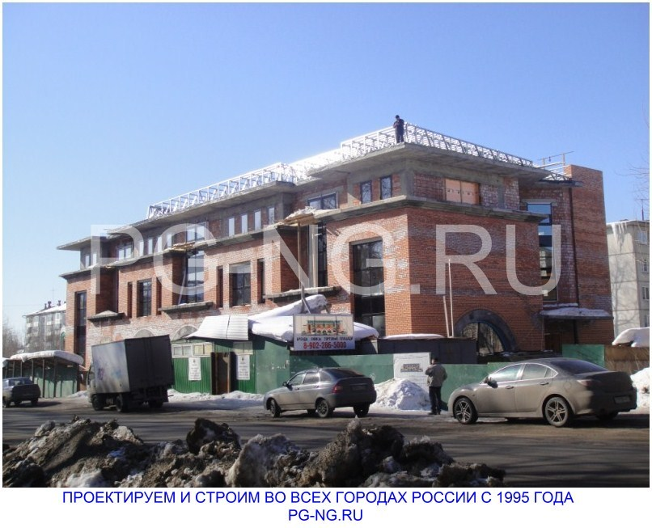
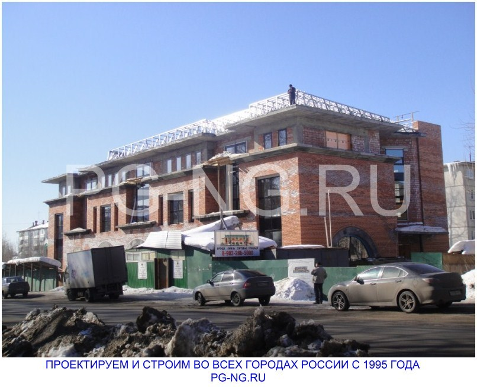

Кровельные работы
Кровельные работы в строительстве
Кровельные работы один из завершающих этапов строительства здания. Основные требования к кровле создание допустимой нагрузки на каркас, исключение возможности промерзания, протечек и прочих эксплуатационных проблем готового объекта.
ПГ Наш город выполняет устройство кровли ЛСТК в Череповце и других городах России. Кровля из металлопрофиля удобно и быстро монтируется, позволяет в полной мере реализовать гидро-, теплоизоляцию, а высокая сочетаемость технологии ЛСТК с любыми финишными материалами кровли позволяет запланировать и реализовать практически любой архитектурный стиль здания.
Ремонт и реконструкция кровли
Кровельные работы востребованы на этапе реконструкции и капитального ремонта объекта. К кровле эксплуатируемых зданий есть еще одно существенное требование: скорость монтажа. Готовый объект не может функционировать, не имея защиты от природных явлений и осадков. Кровля ЛСТК является быстровозводимой. Сроки работ более короткие по сравнению с другими технологиями.
Стропильная система из ЛСТК получается легкой, не дает высокой нагрузки на здание, что особенно актуально для объектов вторичной недвижимости и построек старого фонда. Металлопрофиль передает нагрузку от кровли к каркасу здания.
Кровельные работы при надстройке этажа
Крыши ЛСТК могут выполняться как отельный вид строительных работ или на этапе надстройки этажа к зданию и устройстве мансарды.
Мы выполняем проектирование и кровельные работы под ключ, используя металлопрофиль зарубежного и отечественного производства.
Последний позволяет уменьшить смету расходов на материалы до 3 раз без потери качества. Готовый объект отвечает всем требованиям безопасности. Гарантийный срок службы кровли ЛСТК до 100 лет.
 
